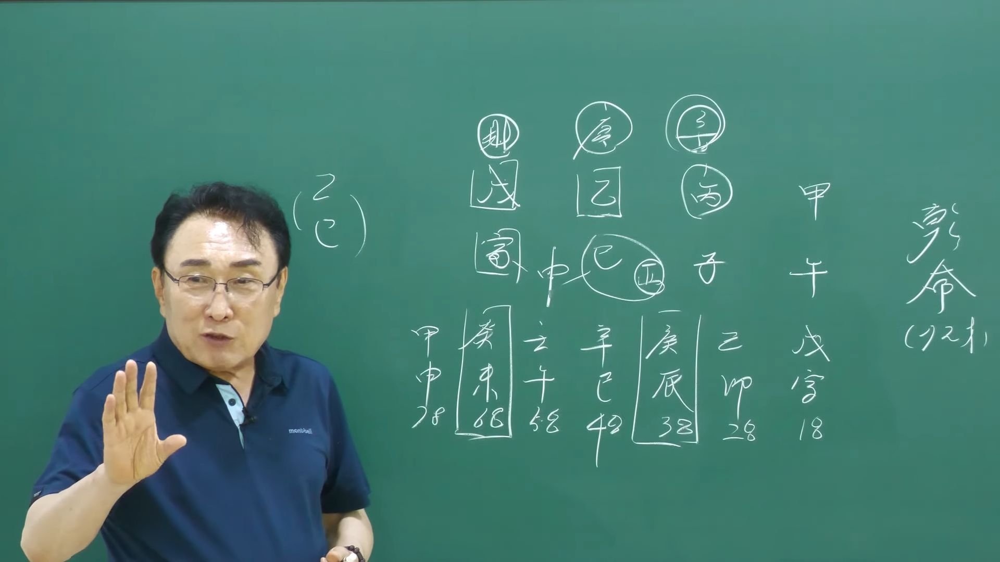

남촌물상TV 전체 문서 › 동영상 V0135
을목의 재물을 갑목이 꿀꺽, 을목이 반전의 생존법 공개

| 문서 번호 | V0135 (동영상) |
|---|---|
| 영상 URL | https://www.youtube.com/watch?v=gXTJutc6NJQ |
| 영상 ID | gXTJutc6NJQ |
| 게시일 | 2025-06-30 |
| 길이 | 27:34 (1654초) |
| 조회수 | 876회 (수집 시점 기준) |
| 카테고리 | Howto & Style |
| 자막 | ko (자동생성) |
| 수집 시각 | 2026-08-30 17:03 (KST) |
영상 설명 (YouTube 설명 원문 그대로)
을목의 생존의 전략 갑목에 얹어 살기.
갑목이 꿀꺽한 내재물 그럼 난 어떻게 해.
을목이 무토의 재물에 숨겨진 비밀은?
전체 자막 (593구간 · 타임스탬프 클릭 시 해당 장면으로 이동)
[0:02][음악]
[0:05]남자 72세
[0:07]갑병자
[0:09]을사무인
[0:10]자 이렇게 되는 사주입니다.
[0:13]자 을사일주예요. 그니까 을목일주에
[0:16]이제에 보시면 을목일주 생각할 때
[0:18]당시 여러분 뭘 생각해야 되냐면은
[0:21]항시 타고 올라가는 거 먼저
[0:22]생각하시면 돼요. 끌어다 오는 것은
[0:25]신신 그 경금과 신금에서 올 거.
[0:28]그다음에 등락 계획할 수 있는 거.
[0:30]이것이 그 을목일주의 특징이에요.
[0:33]이제 그것만 염두에 두고 두시면
[0:35]되죠. 자, 그러면 여기서 이제
[0:37]없는게 뭐가 없습니까? 금이
[0:39]없습니다. 자, 금이 없다. 금이
[0:42]없다는 얘기는 뭐죠? 무관이다 그
[0:44]말이죠. 무관. 관이 없어요.
[0:46]자, 관이 없어. 무관이다.
[0:49]자, 무관이면
[0:51]우리가 이제 그 무관 특성을 많이
[0:53]얘기하잖아요. 질서 순술 자키 이런
[0:55]얘기를 많이 하는데 근데 이제 우리
[0:58]꼭 그것만 가지고 논할 수는 없어요.
[1:00]포괄적으로 생각을 해 줘야지. 그럼
[1:03]자, 재물은 어디 있습니까? 자,
[1:05]여기서 핵심을 잘 찾아요. 재물.
[1:06]무토. 자, 재물은 여기 무토가
[1:10]재물인데 잘 보세요. 여기서 여기서
[1:12]이제 자, 나의 재물인데
[1:16]결과적으로이
[1:17]무토에 따른 갑목의 재물이다라고 제가
[1:20]표현합니다. 왜 그러냐면
[1:22]무인으로서 갑목의 뿌리가 존재하기
[1:24]때문에 심어질 나무는 갑목이 심어지게
[1:26]돼 있는 거예요. 그래서 을목이
[1:30]기토의 채물을 취할 수가 있는데
[1:33]무토의 재물을 취할 수가 없기데
[1:37]무토의 뿌리가 인목이 있어서 저 연에
[1:41]있는 감목이 결과적으로 차지하게 돼
[1:43]있다. 이제 이렇게 되는 사주예요.
[1:45]그러면 자기의
[1:47]재물을 내가 차지하지 못하고 갑목이
[1:51]차지하는데
[1:53]을목은 거기 타고 올라가니까 뭐예요?
[1:56]큰 조직 생활이지.
[1:59]큰 나무에 내 땅을 내 땅을 자리를
[2:02]잡고 차아되는데 갑목이 참고 자기가
[2:04]심어지고 자기가 찾아 그럼 나는 거기
[2:06]올라간다. 거기 빌부터 사는 조직
[2:09]생활이다 그 말입니다.
[2:11]이제 이것을 혼동하시거나 또
[2:13]여러분들이 이해 측면을 잘 해 주셔
[2:15]나중에 이런 사주 오더라도 조직
[2:17]생활이 어떤 관계 있느냐를 쉽게 찾을
[2:19]수가 있는 거예요. 자 그러면은
[2:24]첫째에 채물은 있는데 이제 관을 한번
[2:26]관을 어디서 끌어온가를 봐 보세요.
[2:28]여기서 이제 항시 제가 이제 끌어온
[2:30]법칙을 많이 우리가 쓰이잖아요.
[2:33]그러면 자 관금을 끌어온 자가 어디
[2:35]있어요? 자 을목은 여기서 잘 보시면
[2:38]자 을목은
[2:40]경금을 끌어온다 그 말이죠. 그렇죠.
[2:43]또 병화는 뭘 끌고 올까요? 자,
[2:46]신금을 끌어온다. 자,이 잘 보시면
[2:48]이제 여러 가지 특성을 알 수가 있는
[2:51]거예요. 그러면 경금을 끌어올 때는
[2:55]뭐가 붙어요? 지지에
[2:57]신금이 붙을 거 아니에요. 그럼 자,
[2:58]경규 신금이 붙다. 그럼 이신사죠.
[3:01]아하. 마케팅의 전략을 할 수 있는
[3:04]사람. 자, 그런데
[3:07]저 병화는 신금을 끌어왔어요. 신금의
[3:10]뿌리는 뭐예요? 유금이네. 아,
[3:12]여기금. 사회축이 유금이네. 그러면
[3:16]자 인신사회 마케팅과이
[3:19]사람은 사회축의 유금의 행위를 할 수
[3:22]있기 때문에 작은 어떤 부품 전자
[3:25]이런 계통에 업을 할 수 있는 잘할
[3:28]수 있는 사람이다는 것을 알 수가
[3:29]있죠.
[3:31]그럼이 사람이 뭘 잘할 수 있는가를
[3:33]우리는 금방 눈에 들어야 돼요.
[3:34]그래서 적성이라는 것은 본인이 잘할
[3:38]수 있는 것을 찾아 주는게
[3:39]적성이에요. 근데 그것을 사람들이 안
[3:42]찾고 지금 등하세요. 이번 유튜브를
[3:44]올리다 보니까 적성이 그 중요성을
[3:47]사람들 인식을 안 하고 있어요.
[3:51]사람들은 자기에 필요한 것만
[3:53]생각하는데 내가 뭘 잘할 수 있는가를
[3:57]찾아 주는게 우리가 임무도 되고 또
[4:00]학생들이 진로 상담할 때 가장 필요한
[4:02]것도 되는데 이번 유튜브로 그 진로
[4:05]저 적성이라니까 누가 잘 안 봐.
[4:07]이렇게 세대가 그 변에 있는데 우리는
[4:11]적성이 반드시 필요한 사람 중에
[4:13]하나예요. 그 그런 걸 꼭 눈여겨서
[4:16]보시고 확인을 해 주실 수다 된다 그
[4:18]말입니다. 자, 그러면은
[4:22]결론은 답은 다 나온 거예요. 해석은
[4:24]다 끝난 거라. 자, 여기 해석을 해
[4:26]보면 을목 인간의 무관 사주는 경금을
[4:29]끌어다 쓰게 되면 인신사에서 마케팅을
[4:32]잘할 수 있는 것이고.
[4:34]자, 월간 병화에서는 신금액을
[4:37]끌어다가
[4:39]쓰면은지지 유금이 사이축으로서 아,
[4:42]전자 부품이라 어떤 계통의 작은
[4:45]부품이 관계된 일을 할 수 있 수
[4:46]있는 사람이다. 그랬는데 갑목이 저
[4:50]연애에 있지만 대기업 자리에 있어도
[4:53]자기가 꽃을 펴주고 자기의 관을 쓰는
[4:57]자리는 병화에서 쓰는 거예요. 그래서
[4:59]결과적으로이
[5:01]갑목은 어디에 뿌리를 내렸냐? 여기
[5:04]시에 있는 무토에 결과의 뿌리를 내릴
[5:06]수 있다고 볼 수 있는 거예요.
[5:08]그러면이 사람은 대기업이 아닌
[5:12]중소기업에서 금융할 수 있다라고 눈에
[5:14]딱 들어와야 된다 그 말입니다.
[5:17]자 그러면 이거 답이 다 나온
[5:18]거예요. 그랬을 때이 사람 경우는 저
[5:22]갑목이 끝에 인목의 뿌리까지 존속을
[5:26]해 있다고 생각하면은이 사람은 조직
[5:28]생활로 해서 끝까지 갈 수 있는
[5:30]사람으로 결론을 질 수가 있다.
[5:34]이게 이제 보편적인 전체적인 흐름의
[5:36]답으로 볼 수가 있다 그 말입니다.
[5:38]그럼이 사람은 딱 맞는 체격이
[5:40]뭐예요? 조직 생활하서 딱 맞는
[5:42]체질이지.
[5:45]그러니까 우리들이 이제 봤을 때 조직
[5:48]생활을 하느냐 사업을 하느냐를 구별할
[5:50]때도이 사람은이 무토의 재물이 자기의
[5:54]재물인데도이
[5:56]재물을 취할 수가 없다. 근데 뿌리가
[6:00]여기 뿌리에 따라서 달라져요. 갑목의
[6:03]연간의 갑목의 뿌리가 인목이기 때문에
[6:06]인목이 와서 심어진다 그 말입니다.
[6:07]그러면 자기 을목이 체할 수 있는이
[6:12]무토의 땅을 결과적으로 갑목이
[6:14]차지하고 그 말이고 그러면 나는
[6:17]갑목이 심어지면 나는 거기 더으로
[6:19]올라갈 수 있는 사람이다. 이제
[6:20]이거거든요. 그러면 제가 올라갔으면
[6:22]어느 정도 그래도 그 회사에 소위
[6:27]관리 사장 정도는 할 수 있다 그
[6:28]말입니다.
[6:32]이게 이제 핵심적인 답이에요.
[6:35]근데 이제 여기에서 보시면
[6:38]또 한 마디 더 저 이제 웃고 넘어갈
[6:40]일 자 여기에
[6:43]관이 관이 신금이 결과적으로 딱 여기
[6:47]와서 뿌리가 사이축이 부부이 사이축
[6:49]금이죠.
[6:51]그러면 이런 사람 부부의 여자가
[6:53]결과적으로 남자를 꼼짝 못하게 하는
[6:56]스타일 이렇게 그 사주도 볼 수 있는
[6:59]거예요. 이런 사주들은 결과적으로
[7:02]여자 여자한테 딱 재혀서 하는
[7:04]스타일이에요.
[7:07]지배적인 관이 딱 집회 잡다이
[7:09]말이야. 관이 관으로 볼 때는
[7:12]뭐예요? 재죠. 그죠? 너 돈 버는
[7:15]사람 이렇게
[7:18]그러니까 돈은 네가 벌고 권력은 내가
[7:21]잡고 있다 그 말 아닙니까? 그래서
[7:22]이런 사람들 경우는이 여자가
[7:26]자기 남편을 100% 딱지고 사는
[7:28]사람이다.
[7:31]이제 이런 것도 금방 눈에 들으셔야
[7:32]돼. 한 번씩 보면.
[7:35]자, 무슨 뜻인지 알겠죠? 이해 안
[7:37]가신 분도 없죠? 그러니까이
[7:40]관이라는게 어디서 끌어? 내가이 부부
[7:42]공계 합이 관이 돼 있단 말이야.
[7:44]사가 아니에요. 부부가 관이이 유금이
[7:47]관이라 그 말이야. 유금이 관이이 저
[7:50]유금이 돼 있는데 그럼 나는 을목이기
[7:53]때문에 관 입장에서 볼 때는 여자
[7:55]입장 볼 때는 돈 버는 남자지. 그럼
[7:58]너 돈만 잘 벌어. 내가 다섯 개
[8:00]아니에요. 그럼 꼼짝 말아 넣어
[8:01]움직이면 안 돼. 이게 제지할 수
[8:04]있는 능력을 가진 사람으로 보라.
[8:07]자, 이해하셨죠? 네. 자, 이런
[8:09]것을 보시고 그이 한 가정에 또
[8:12]간다는 것도 알 수가 있는 것이다.
[8:15]그다음에
[8:17]자식자리는이 사람이 잘 될까 안 될까
[8:19]이제 이런 거 보시면 돼요. 항시
[8:21]우리는 사주를 보고도 저 사람의
[8:23]자식들이 잘 될 것이다. 이런 것도
[8:26]금방 알 수가 있다.이 말입니다.
[8:28]자, 그러면 자기이 사람의 꿈은 항시
[8:31]지금 뭐예요?여 큰 나무에 저 나무가
[8:35]심어지기를 바라는 사람 마음
[8:36]아닙니까? 부모 마음은 자식 자리에서
[8:39]심어진다는 얘기는 감갑인이 되는
[8:42]거죠. 그이 사람 뭐예요? 내 아들이
[8:45]교육자라든가 대학 교수를 원하고 있는
[8:48]부모예요.
[8:49]이제 이런 걸 금방 할 수가 있는
[8:50]거예요. 그러니까 자기 을목이
[8:55]갑목을 타고 올라갈 수 있는 내가
[8:56]아들이 대학 교수를 하게 되면 나는
[8:59]굉장하게 그 자부심을 갖고 살 것
[9:01]같아. 이게 안심법이다 그 말입니다.
[9:05]이런 걸로 활용을 하시면은 얼마든지
[9:08]사주 보면서 자식한테 바라는 마음이
[9:12]뭐고 또 자식이 잘 될 건가 안
[9:15]될까도 볼 수 있다. 자식이 괜찮은
[9:18]잘 돼요. 이런 사람들은
[9:20]괜찮을 거다고. 자, 그러면 또 한
[9:23]가지 더이
[9:25]사람이 회사 생활 근무할 때이 사람은
[9:28]사화라는이 저 어 병화라는 걸 가지고
[9:31]있어요. 그다음 병화는 쉽게 얼음
[9:34]뭐라고 항시 얘기할 뭘로 봐? 국가를
[9:36]벌어. 국가. 그럼이 사람은 내가
[9:39]만약에 사장 원어의 사장이라면이 사람
[9:41]뭘로 써야 돼? 해외 출장이나 해외
[9:43]거래처를 자꾸 만들어야 되는 거죠.
[9:45]그래야 마케팅을 잘해. 왜?
[9:48]해외에 가서 돈을 벌려고 하면 신금을
[9:51]끌어올 거 아닙니까? 그죠? 그것이
[9:53]사회축의 유금의 일거리예요. 그러면
[9:55]그 일거리를 가서 인신사에 마케팅
[9:57]전략으로 잘할 수 있는 사람 이렇게
[9:59]결론을 딱 집어낼 수 있어야 된다 그
[10:01]말이에요.
[10:04]그러니까 이게 한 눈에 눈이 일병요
[10:10]봐요.
[10:12]저 사람은 감가 있을 때 인술로서 갈
[10:16]수 있는 사람이죠.
[10:18]꽃을 피울 수 있는 사람이에요.
[10:20]그래서 아까 제가 자식 자리에 감목이
[10:23]심어져도 인호수리를 될 수가 있는
[10:25]사람. 그래서 자식이 대학 교수를
[10:27]원하고 있고 잘 될 거라고 표현한거다
[10:30]그 말이에요. 근거 없이 잘될 거다,
[10:34]안 될거다 구별하면 안 되는 거예요.
[10:36]확실하게 어떤 근거해서이 사람은 잘
[10:39]되고 있네 안 되는가를 찾아서
[10:41]여러분들이 설명을 할 수 있어야 된다
[10:43]그 말입니다. 음.
[10:45]이것이 핵심적인 얘기예요. 그러면이
[10:48]사주는 근본적으로 다 풀어 나간
[10:49]겁니다. 항시 원국 해석을 잘 대야
[10:54]대우는 쉬운 거예요. 대우는게 전복만
[10:56]시기면 되는 거거든요. 그러니까
[10:58]원국이 딱 보고이 사주가 어떤
[11:00]사람인가를 구체적인 대안이 스스로
[11:03]나와야 돼.
[11:05]갑자기 와서 뭐 올해 울산 여째야
[11:07]갖고 사주 보지 마라고 그랬어요.
[11:09]원국을 다 알아야만이 을산이 여쭤
[11:12]본다 그 말이에요. 올해가 올해가
[11:14]무슨 년이에요? 자 을사년이에요. 자
[11:16]을사년
[11:18]자 을사년이 오면은
[11:21]어떤 일이 생길 것인가 이제 이렇게
[11:23]생각하시면 되죠.이 사람이 나이가
[11:25]먹었으니까 지금 회사생활 아니니까
[11:27]생각을 해 보자 그 말이에요. 지금이
[11:29]사람이 대원에 여기 와 있죠. 자,
[11:32]개미대 와 있단 말이에요. 그럼
[11:34]여기서 이제 우리가 봤을 때 잘
[11:36]보세요.
[11:38]을목이라는 저 나무가 무토에
[11:41]심어진다고 가정 합시다. 그러면 자,
[11:44]우리가 사주를 볼 때는 저 재물로서
[11:47]치하냐 못 치냐를 봤는데 노후의
[11:50]생활들은 재물보다 뭐예요? 작은
[11:52]나무들이 무토에 심어진다고 하죠.
[11:55]그죠? 자, 무터 심어지고 지지에 4
[11:59]5가 되잖아요.
[12:01]그러면 자,이 사람이 노후를 산다
[12:04]하면 작은 나무를 신고 작은 주택을
[12:09]가지고 하려하게 나무에 꼽히는 그
[12:12]정을 가지고 있을 수 있다. 그럼
[12:14]너는 나이가 들면 그런게 좋아.이
[12:17]답을 정해 줄 수 있다. 그 말이야.
[12:18]우리가.
[12:20]이런 걸 가지고 너는 전원 생활이
[12:23]좋아. 도지 생활이 좋아. 근데 이제
[12:26]우리는 도지 생활 저 같은 경우도
[12:28]만약에 시골하면
[12:30]살 수 있어요. 근데 생활의 근거가
[12:33]뭐가 있어야 돼? 자금력이 나와야
[12:36]돼. 그이 사람 뭐요? 사회축의
[12:39]유금은 제가 당시 뭐라 그랬어요?
[12:41]임대업에서
[12:42]월세가 나오는 사람.
[12:45]그러면 자기가 10월에서 살
[12:47]살살더라도 매월 월세가 나오니까
[12:51]자기가 얼마든지 즐기고 살 수 있는
[12:54]안정된 삶을 가질 수 있다이
[12:55]말입니다.
[12:58]이것이 그냥 눈에 금방 들어오지
[12:59]않습니까?
[13:01]이것을 할 수 있는 사람이 나 노는
[13:03]이런 사람이다라고 보시면 돼요.
[13:06]음.
[13:08]그럼이 사람 경우는 보급적인 잘 나간
[13:11]사람 중에 하나죠. 본급적이로는음
[13:15]본급적으로 괜찮다.음
[13:18]지금 저 어줌으로 듣고 계신
[13:20]선생님들도 질문을 하게 되면은
[13:24]질문하시라고 하면 여기 스피를 통해
[13:25]질문이 되니까 질문하셔도 됩니다.
[13:27]음.
[13:29]자 그럼 우리가 이제 전체 흐름의
[13:32]5행의 사주를 가지고 전체 다
[13:34]봤어요. 완전히 사주가 다 풀어진
[13:37]거예요. 여기 자체는. 근데 이제
[13:39]여기 이제 자수라는 개념을 누가 한
[13:41]하나도 설명을 제가 안 드렸어요.
[13:43]그렇죠? 5화도 했고 4도했고 인도
[13:46]다 자수는 내가 안 했다 그 말이야.
[13:48]그죠? 네. 자, 자수라는 것은
[13:52]아까 을목에서 내가 끌어다가 신금을
[13:56]쓴다는 얘기 아닙니까? 그러면
[13:58]신자지이 된다는 얘기는 역시 유통
[14:00]네. 또 된다 그 말이에요. 신재중에
[14:02]유금 영업. 예. 그러니까 유통과
[14:05]영업에이 사람이 잘할 수 있는 소지를
[14:07]가지고 있던 건 확실한 거예요.
[14:10]그래서 제가 아는이 사람의 그 회사의
[14:13]그 부사장이었는데이
[14:16]사람이 그 장사를 잘해요. 음.
[14:19]그래서 그이 사람이 제일 잘한게
[14:21]뭐냐? 그러니까 일본에서이 사람은
[14:25]일본이 오잖아요. 일본에서 뭘
[14:28]하느냐? 음성 유공을 소리 나는
[14:31]스피커 종류를 해서 나품을 많이 한
[14:33]사람이에요. 소원이 이런데 그 저
[14:35]스피커를 많이 만들어 나래. 이제
[14:38]그런 업을 했던 사람인데에이는
[14:42]사람들을 그 흐름을 보면은 이제 거의
[14:44]뭘 잘하냐도 다올 수 있는 것이고이
[14:47]사람 특징이 뭐고 적성이 뭐고 뭐를이
[14:50]사람은 잘할 수 있다는 근본적 해결은
[14:51]다 돼. 그러면이 제가 볼 때이 여덟
[14:54]글자에 대해서 설명을 다 드린
[14:56]거예요.
[14:58]안 드린 자가 하나도 없잖아요. 네.
[15:00]음.
[15:02]그러니까 원국이라는 것은 여덟자를 다
[15:04]설명을 할 수가 있어요. 대입을
[15:06]해서. 그러면이 사람이 어떤 사람이고
[15:09]앞으로 어떻게 살아갈 것이다 하는 건
[15:10]이미 다 나왔어. 그럼 자,
[15:12]여기서부터 이제 대우를 차근차근 짚어
[15:14]보면이 사람이 어떻게 살아갈 것인가를
[15:17]알 수가 있죠. 그죠?
[15:20]자 그러면 한번 여기에서 전성기가
[15:23]어느 때가 찾아볼까요? 전성기
[15:26]제일 잘 나갈 때 신자는 이제 38세
[15:30]38세
[15:32]신자지
[15:35]38 자 좋죠 자 38에
[15:40]경진 대우는 대우는 뭘 해하냐 을경
[15:44]합을 하라고 했잖아요 그럼 항시
[15:46]뭐냐면이 태양을 내가 잡아야 돼요.이
[15:49]사람은 태양을 잡아야 돼. 거기에서
[15:52]나의 관이 있기 때문에 내가 관을
[15:56]끌어다도 쓰지만은 그 속에 관도 있다
[15:58]그 말입니다. 그러면 자, 내가
[16:01]끌어다쓴 것은 경금이지만 병화 속에
[16:04]있는 관은 신금이 내 거예요. 나하고
[16:07]딱 맞는 칼루예요. 그러니까 그걸
[16:09]잡아야지. 자, 그러면 을경함을
[16:12]했다. 그렇죠? 그러면 신금이
[16:15]붙어요. 얼름 생각을 해야 돼요.
[16:16]항시을 합을 해서 끌어오면 신금이
[16:19]됐다 그 말이에요. 그럼 아하.
[16:21]진토의 신이 됐네. 그럼이 사람이
[16:23]회사에서 뭔가 유통업이 잘 지금 영어
[16:27]하고 있는 거죠. 잘하고 있다. 자,
[16:30]그러면은
[16:33]자기가 생각할 때 이제 을경 합을
[16:34]하면 신급이 됐을 거 아닙니까?
[16:36]그죠? 네. 그러면 신급이 됐으면
[16:40]병어실 합도 되죠. 네. 그렇죠.
[16:42]그렇죠. 그러면 자, 여기에는
[16:45]여기에는 중소기업 회사예요. 회사.
[16:49]쉽게해서 그러면 단지 병실 합도
[16:52]되지만
[16:53]사장이 원하는 건 뭐였냐 그 말이
[16:57]사장이 원한 것은 자 사장이 원한
[17:00]것은 여기에이 사람이 신금을 끌고
[17:04]얘기 아니에요?이 사람 할 때는 그럼
[17:06]제 신신이 된다고 생각해야 돼.
[17:07]그니까 응용력이 우리 물상론에서는
[17:10]굉장히 충분해야 돼요. 그게 꼼꼼하게
[17:14]판다 할 때는 그 속기까지도
[17:16]들어가기는 습관을 길려야 된다.
[17:17]그러니까 금방 물상노에서 1년 배고
[17:19]다 땡하란다. 다른 것에 1년 배우고
[17:22]안 된 사람이 물상 1년 배우고 다
[17:24]참면 누가 안 보도 있겠어요? 근데
[17:26]어느 정도를 어떻게 잘 보냐지 보는
[17:29]건 보죠. 근데 얼마 정도 그 사람이
[17:32]깊이가 있고 잘한다고 소이 날 수
[17:35]있냐를 얘기하는 것이지. 어 1년
[17:37]한다고 해서 뭐 저저 그뭐 대충 뛰어
[17:40]못해 하지
[17:42]뭐 6개월 한다고 못 합니다. 하지
[17:44]할 수는 있는데 내 공식력과 내
[17:47]실력을 얼마만큼 그 사람들이 알아줄
[17:51]수 있게 만드느냐예요.
[17:53]그게 중요한 거지.음 뭐 1년 한
[17:56]2년 무슨 상관 있어요? 가서 하지
[17:58]뭐. 원동에 마치면 우리 그냥 물상
[18:00]노력 대충 대충 집어도 말은 잘 할
[18:03]수 있고 잘 맞출 수 있어요. 근데
[18:05]그 중에도 좀 더 세부적이고 더
[18:08]정확하게 짚어낼 수 있는 것은 더
[18:10]여러분들이 연말하셔야 되는 거예요.
[18:13]그러니까 옛날에 저한테 그 공부했던
[18:16]모든 사람들이 한 2년하고 그만
[18:18]뒀어요. 이제 거기까지예요. 가서
[18:20]이제 계속 그 배운 걸로 이제 그 막
[18:23]써요. 쓰는데
[18:26]깊이가 없다 그말 사람 깊이가 그럼
[18:28]이제 자기가 보통 보면 영업할 때
[18:31]나가서 영업해 보면 깊이 있게 공부를
[18:34]또 자기 연구를 해야 되는데 안
[18:35]해요. 대부 안 해요. 안 하고 그냥
[18:37]그 있는 걸로 써 쓰고 해보 뭐 잘
[18:39]맞았다 하더라면 이렇게 해서 그냥
[18:41]그거 끝나려고 하는데 그렇게 하시면
[18:42]안 돼요. 자 여기에서 이제 공부를
[18:45]하다 보면 저도 더 깊이 있게 나가다
[18:47]보면 뭔가를 또 새로운 것이 자꾸
[18:49]떠올라요.
[18:51]하고 새로운 것이 더 나 나온다고요.
[18:54]그것이 이제 어느 정도 경지에
[18:56]올라가면 이제 사람이 뭐 도인 소리
[18:59]듣고 그런지 모르겠지만은 어쨌든 저도
[19:02]무한하게 많은 걸 보잖아. 여러분들
[19:04]사주 푸는 거 저는 몇 배를 풀어
[19:06]보잖아요.
[19:09]여러분들이 하루에 뭐한 두 개 푼다면
[19:11]저는 하루에 한 10개 20개를
[19:12]푼다. 그 말이에요. 풀어서게 맞는
[19:14]거 대조해 보고 이렇게 해서 그 진짜
[19:18]맞는 건가? 진짜 틀린 건가? 이런
[19:20]걸 가지고 설명을 드리는 거거든요.
[19:22]그래서 여러분들이 공부하실 때
[19:24]파고들고 무한하게 하셔야 돼요. 자,
[19:27]그러면 그다음에
[19:30]그럼 신사대운 어떤 것이야?
[19:31]신사대우는
[19:33]자 신사대운
[19:35]어떤 거가요? 신의 세계예요.
[19:39]자, 잘 보세요. 신사대운은
[19:42]내가 안 해도 내 칼자로 오는 거죠.
[19:45]아까는 내가 희생을 노래. 여기서는이
[19:47]사람이 산 예회사에서 인정을 받기를
[19:51]얼마나 무한한 노력을 했겠냐 그면
[19:52]내가 희생을 해서 경금 끌어내가
[19:56]신금의 신금이야 신신금의 역할로 한
[19:58]사람이에요. 그때 당시는 근데 이제
[20:00]여기 오니까 저절로 내 칼자루가 맞는
[20:05]금이 왔다 그 말입니다.
[20:07]그리고지지 이제 4 왔자요. 네네.
[20:10]자 여기서 이제 여기 저 좀 더 깊이
[20:13]4가 두 개예요. 네 유금을 쓰는게
[20:16]두 개죠. 네. 그러면 이제 옛날에
[20:18]하나만 관리했던 것이 두 개 관리처가
[20:20]되는 거예요. 원 아시겠죠? 이럴 때
[20:22]이제 부서가 하나 더 생기거나 산에
[20:26]회사가 또 있으면 결과적으로 그
[20:28]회사를 같이 동시에 관장한다든가 이런
[20:30]쪽으로 가게 돼 있어요.
[20:34]그 우리 이제 봤을 때 저 얼른 보면
[20:36]아 사가 왔는데 사유쪽이 유금이니까
[20:38]뭐 왔네. 이제이 정도는 기본에서
[20:41]그냥 너나 나나 다 할 수 있는
[20:42]일이고 우리는 어떤 거예요? 4가 두
[20:45]개 여기서도 6음 여기서 두 개 두
[20:47]개를 만드서 유음이네. 그러면 자
[20:49]핵심은이 사람이이 관에 육음에 지금
[20:52]행위를 하고 있잖아요. 그 두 개
[20:54]행위를 하니까 두 군데 일할 수
[20:55]있다. 그 말이에요. 이제 이런 것을
[20:58]좀 더 깊게 생각하시면 아하이 사람이
[21:01]이런 그 관계에서 일어나고 있다는
[21:02]것을 알 수가 있다.
[21:05]음. 그러니까 굉장히이 사람이
[21:08]능력가지요. 괜찮은 사람이에요. 음.
[21:10]자, 근데 근데 이제이 사람의 사장이
[21:13]경금일주였어요. 옛날에. 음.
[21:16]근데 다 사람이 보니까 회사 부사장
[21:19]뭐 경기 이사람 다 을목일들이 거의
[21:21]태반이야.
[21:23]그게 신기하다고 제가 그랬어요.
[21:25]근데 하나만 아니더라고. 하나는 이제
[21:28]중간에 뭐야? 배신할로 중간에 내가
[21:32]나가서 한다든가 내가 나가서 뭘
[21:34]맺는다든가 배신 그런 놈이 하나씩
[21:36]끼게요. 그게 우리가 아 단순하게 그
[21:40]기업할 때 기업들이랑 제가 왜 돈을
[21:43]많이 주고 박습니까?
[21:45]기업분들이 왜 와서 뭐 몇 백 주한
[21:46]이유가 뭐겠어요?
[21:48]그 사람들은 내 전무나 내 상무이
[21:51]사람들이 나한테 이놈이 돈을 벌어 줄
[21:54]놈이냐 아닌가를 보는 거예요.
[21:57]그리고 실질적으로
[21:59]돈을 벌어서 줄놈이냐 저놈은 돈 벌면
[22:01]나를 배신 갈놈이냐 이것을 보라고
[22:04]자꾸 저들한테 돈을 주는 거지. 그냥
[22:06]사주 하나 달랑 보고 주는 거 아니다
[22:08]그 말이야. 그러니까 그 사람들이
[22:10]저어 기업주들이 오면 300도 주고
[22:12]500도 준 이유가 그런 거지. 그냥
[22:14]그 사람이 뭐 저 어 해수 주란 건
[22:16]아니잖아요.
[22:18]다 그 깊이가 있는 거예요. 그래서
[22:20]우리들은 그 사람들한테 공신력을 얻을
[22:24]수 있으려면 그만큼 더 노력을 해
[22:27]봐야 돼요. 더 노력해 보고 더
[22:30]찾아야 돼. 이것이 우리가 지금
[22:33]단순하게 뭐 사주 하나 본게 문제가
[22:35]아니라 더 차원이 다르게끔 하실 줄
[22:39]알아야 된다 그 말입니다. 음.
[22:42]그래야 경쟁에서이기는 거고 아다 거기
[22:44]그 탄 사람 달라. 가보면 뭐가
[22:47]다르지 달라. 그럼 저 사람들이
[22:48]그렇잖아요. 음. 아니 저 사람 가면
[22:51]뭐 보통 뭐 10만 원, 20만 원도
[22:53]받고 뭐 기업지 돈도 많이 주더라.
[22:56]많이 줄 때는 그냥 주겠어요. 다
[22:59]그만큼 대가상을 해 주기 때문에
[23:01]준거다 그 말입니다. 그러니까 우리는
[23:03]똑같이 공부를 해서라도 그러한
[23:05]300, 400을 500도 받을 수
[23:07]있고 1천도 받을 수 있는 그 실력을
[23:10]여러분들이 길러 주게 되면 자, 한
[23:13]해서 어떤 핵심를 맞춰 줬어요. 그
[23:15]사람 또 와요. 또 찾아와요. 그럼
[23:17]그 기업주가 이제 잘 풀렸다. 자,
[23:19]예를 들어서
[23:21]당신 이번에 유럽 진출해. 일본
[23:22]진출해 진출해서 거기 거래치를
[23:24]잡은는데 한번 해 봐. 잘될테니까
[23:27]지금이도 늦지 않다 해서 일본 거래
[23:30]잘됐다 그잖아요. 반드시 옵니다.
[23:34]기업주들은 또 절대 안 잊어버려요.
[23:35]그걸로 와요. 오고이 다음 어디를지
[23:38]어디를 갈까요? 어디로 거래할까요?
[23:40]이것 때문에 또 와요.
[23:43]이제 그런 것을 자꾸 타다 보면
[23:46]속에도 들어오고 대기업을 상대로 하게
[23:48]된다 그 말입니다. 사람의 모든 것은
[23:51]그 뿌리라는 존재가 있어야 돼요.
[23:53]근데 을목에 뿌리가 없어요. 묘가
[23:55]오면 자오묘이고 또 임묘진의 뿌리가
[23:58]되면 감목의 뿌리가 되고 그니까
[24:00]자기의 뿌리가 종속이 될 수가 없는
[24:03]사람이다 그 말이에요. 만약에 뿌리가
[24:06]묘가 오면 어디 갈까요? 자 어디로
[24:09]가?
[24:10]자, 임묘진이 될 거 아닙니까?
[24:13]그리고 또 자음이 되잖아요. 그러면
[24:14]저 임묘진이 되면 누구 뿌리야? 저
[24:16]감목이 뿌리가 되는 거지요. 내
[24:18]뿌리가 올 시간이 없어요.
[24:20]묘하면 자우묘이고 또 묘하면
[24:23]임묘진에서 내 뿌리가 생길 데가
[24:26]없다고.
[24:27]이게이 사주의 가장 단점이에요. 자,
[24:30]묘가 단점이네. 예. 그러니까 그걸
[24:34]묘의 뿌리를 만들 수가 없다 그
[24:35]말이에요. 끌고 나가는 힘이 약한
[24:38]거죠.
[24:39]그래서이 사람 맨날 해 봐야 사업을
[24:40]못 해요. 이런 사람들은 사업이 안
[24:43]되기 할 수가 없어. 이런 사람
[24:44]사업하면 망해요.
[24:47]사업 이런 사람 망한다고. 운이
[24:48]좋아도. 그 이유가 뭐냐면 본인이
[24:52]뿌리가 청색이 안 되니까 맨날 나무
[24:54]존기가게 다기는 거예요. 자,
[24:56]이해하셨죠? 네. 자, 그렇게 해서
[24:58]그렇다는 설명을 드릴 수 습니다.
[27:30][음악]
칠판 원국 판독 (영상 프레임을 AI가 시각 판독 · 원판 대조 필수)
乾造
천간
戊
천간
乙
천간
丙
천간
甲
지지
寅
지지
巳
지지
子
지지
午
판독 신뢰도: 중간
판독 노트: 乾命92세, 대운 정행 戊寅18~甲申78, 월주 丙子 정합 · 시점 20:41 · 해당 장면 보기↗
자막은 YouTube에서 제공하는 한국어 자동음성인식(ASR) 트랙의 원문입니다. 고유명사·한자 용어·숫자 표기에 자동인식 특유의 오류가 있을 수 있어, 원문을 가능한 한 그대로 보존했습니다. 위에 칠판 원국 판독 섹션이 있는 영상은 화면 프레임을 AI가 시각 판독한 것으로 신뢰도 표기를 확인하고, 없는 영상은 화면 도표가 문서에 포함되지 않습니다.